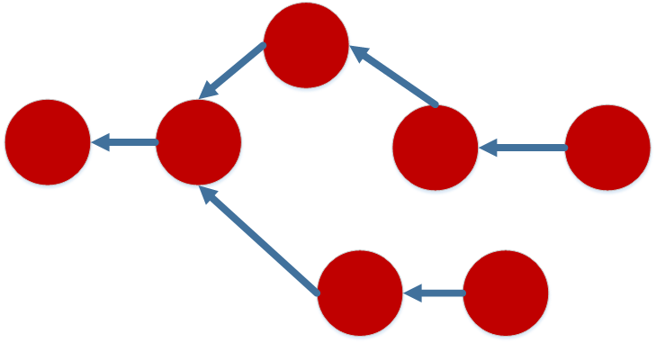

Git is a free and open source distributed version control system designed to handle
everything from small to very large projects with speed and efficiency. - git-scm.com
Sounds pretty cool, but what does this really mean?
Content tracking
History and versioning
Remote distribution
Simple Content Tracking
Key / value content store
Provide data and get back a key
Objects in git are identified by SHA-1
What is a SHA-1?
One-way cryptographic hashing algorithm
40 character hexadecimal value
Detects changes in content
Guarantees consistency
Key Concepts
Object Types
Blobs - data
Trees - directory structure
Commits - meta-data for point-in-time snapshot
Reference Types
Tags - Fixed human readable references to commits
Branches - Dynamic references to commits
Plumbing vs. Porcelain Commands
Porcelain commands are familiar (fetch, pull, merge...)
Plumbing commands are the low-level commands
Reviewing plumbing commands aids in understanding

Directed Acyclic Graph (DAG)
Graphical pattern for object references in git
Directed - Edges between objects are one direction